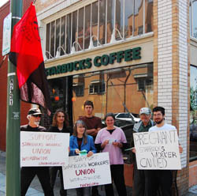

Submitted on Sat, 07/23/2011 - 1:08pm
Liberté Locke (IWW, NYC) 917-693-7742, liberte.angrybarista [at] gmail.com (English Only)
Andrés Giordano (President of El Sindicato de Trabajadores de Starbucks en Santiago, Chile) 011-569-918-19467, sindicatosbux [at] gmail.com (English and Spanish Speaking)
July 22. 2011
Union Seeks to Hold Starbucks Accountable for their Union Busting at Home and Abroad
NEW YORK – Monday, July 25th, the IWW Starbucks Workers Union will launch a Global Week of Action in support of their separate but sister union El Sindicato de Trabajadores de Starbucks en Chile (Starbucks Workers Union in Chile).
Over 200 baristas and shift supervisors that work in the 32 Chilean Starbucks locations went on strike on July 7th. They are striking in an effort to have their demands met. Their most crucial demand is earning a higher wage. Currently baristas at Starbucks in Chile make $2.50/hr. while the drinks are still sold for US prices, and they haven’t received raises in 8 years. The baristas are also asking for a lunch stipend in order to eat during their shifts, this is something managers in Chile are provided.
Two weeks, to the day, after the strike began a New York City barista and mother of two young children was fired for announcing her membership in the IWW Starbucks Workers Union. The company gave no official reason for her termination but did fire her when she refused to meet with higher ups without her attorney and union representative present, which was a previous agreement between the union and management. Tiffany White-Thomas has worked at the Canal/Broadway Starbucks for over two years. She was up for a promotion when her store manager, Rafael Fox, told her that, being a mother, she would not have the time necessary to dedicate to the company so he would not be promoting her. A letter given to Tiffany’s managers made reference to the collective efforts of the IWW Starbucks Union and the Chilean Strikers. Both unions feel that that this solidarity across borders is seen as a threat to the company and is, in part, what led to Tiffany’s termination.
In New York City, the first solidarity action will be a press conference and picket in front of the Canal and Broadway Starbucks location, 405 Broadway between Walker and Canal St., starting at 12pm on Monday, July 25th. The IWW is demanding full reinstatement of Tiffany White-Thomas and that Starbucks negotiate in good faith with their brothers and sisters of El Sindicato de Trabajadores de Starbucks en Chile.
Similar actions in support of the Chilean Strikers are expected in various cities throughout the US and the world throughout next week.
The IWW Starbucks Workers Union is a grassroots organization composed entirely of current and former Starbucks employees who have fought for respect, security, affordable health care and a living wage since 2004. Working together, SWU members have improved working conditions for Starbucks employees and won legal victories against unfair labor practices.
 San Francisco--On Friday, July 29th members of the Bay Area Industrial Workers of the World (IWW) introduced San Francisco's financial district to the global action campaign against Starbucks union busting and the inspiring militancy of Starbucks union workers on strike in Chile.
San Francisco--On Friday, July 29th members of the Bay Area Industrial Workers of the World (IWW) introduced San Francisco's financial district to the global action campaign against Starbucks union busting and the inspiring militancy of Starbucks union workers on strike in Chile.